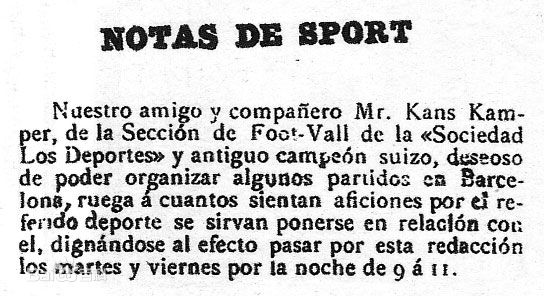
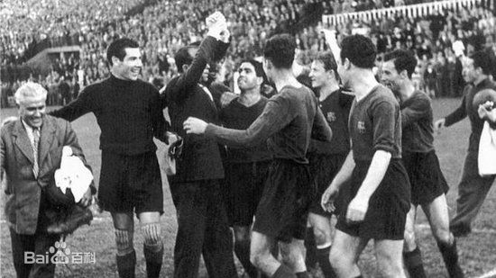
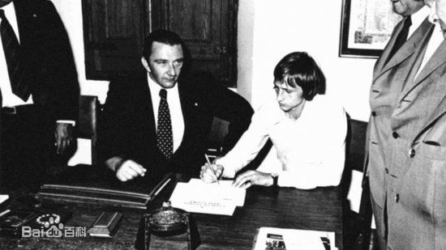
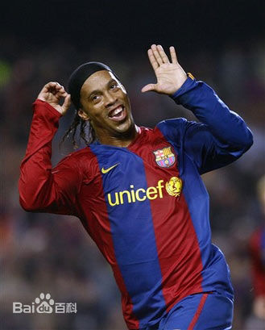

荣耀
2016年，我们加冕三冠王!
-
西班牙足球甲级联赛
北京时间2016年5月14日晚23:00，西甲第38轮中，巴萨客场3-0击败格拉纳达，5连胜收官，拿下队史第24次联赛冠军。
-
西班牙国王杯
北京时间2016年5月23日凌晨3点30分。在马德里的维森特-卡尔德隆球场，卫冕冠军巴塞罗那2比0加时战胜塞维利亚，历史上第7次成为西甲和国王杯的双冠王，同时这也是巴萨第28次赢得国王杯。
-
西班牙超级杯
北京时间2016年8月18日5时（西班牙当地时间17日22时），西班牙超级杯开始次回合较量，巴塞罗那主场3比0完胜塞维利亚，总比分5比0夺冠。


球队历史
铭记历史，创造未来
-

建队初期（1899-1909）
1899年10月22日，汉斯·甘伯从杂志中刊登一个广告宣称自己自己想建立一个足球俱乐部。最终在11月29日Gimnasio Solé举行的会议上，巴塞罗那足球俱乐部宣布正式成立。
-

成长阶段（1909-1919）
在甘伯担任主席的不到10年间，会员数量从1909年的201人增长到2973人。在这期间，巴萨打下了坚实的基础，逐渐成为一开始设想中的足球俱乐部。
-

首次巅峰（1919-1930）
西甲联赛创立于1929年，当时共有10支球队参加，巴萨在首届联赛中以11胜3平4负积25分（当时获胜积2分）力压获得23分的皇马，夺得首届西甲冠军。在1919-1930年里，巴萨共获得10次加泰罗尼亚冠军，5次西班牙冠军赛冠军和1次西甲联赛冠军。
-

涅槃重生（1930-1949）
1930年7月30日，巴萨创始人之一甘伯被证实由于个人因素自杀身亡，年仅52岁便离开人世1935年7月，留在西班牙的巴塞罗那主席约瑟普·索诺尔被叛军首领弗朗西斯科·佛朗哥下令枪毙。巴塞罗那队员们当时在墨西哥和美国做巡回表演赛才没有被枪杀。
-

五冠王朝（1950-1968）
1950年6月库巴拉加盟巴塞罗那。俱乐部在 Ferdinand Daučík教练和库巴拉的带领球队获得了1951/52，1952/53赛季联赛冠军，还包办了1951/953三年的西班牙杯冠军。在1951/52赛季，巴塞罗那在由巴罗萨、塞萨尔、库巴拉、莫雷诺、曼科恩组成的锋线率领下成为了联赛、西班牙杯、拉丁杯、马丁杯、罗西杯冠军的五冠王。
-

克鲁伊夫时期（1969-1978）
1973年，蒙塔尔再度被选为主席，他的竞选标语是“巴萨不仅仅是一家俱乐部”。1973年巴塞罗那签下了荷兰足球传奇人物克鲁伊夫。1973/74赛季巴塞罗那获得了联赛冠军，为俱乐部75周年庆典献上了大礼。这时的巴塞罗那已经拥有了69566名会员，成为当时世界上最有影响力的足球俱乐部。
-

梦一王朝（1978-1995）
1978年5月6日，约瑟普·刘易斯·努涅斯当选巴塞罗那主席，自此他亦成巴塞罗那在任最久的会长。九十年代的巴塞罗那仍然取得极佳成绩。由克鲁伊夫执教的巴塞罗那由1991年起连夺4届联赛冠军，加上于1992年科曼的入球击败森多利亚，赢得球会的第一个欧冠冠军，故被誉为巴塞历年来的“梦幻队”（梦一队）
-

平淡期（1995-2002）
随后几年巴萨成绩一直平平无奇当时范加尔大量引进荷兰球员，被称为“荷兰班底”。可惜范加尔并未能为球会更进一步，当在2000年西甲巴萨只得第二名，范加尔便宣布辞职。自此巴萨踏入衰落期，联赛更曾一度跌落至第十五位，连欧冠杯席位都多次失去。
-

梦二王朝（2003-2007）
2003年夏天巴萨大改革，拉波尔塔成为俱乐部主席，聘请了荷兰人里杰卡尔德来到俱乐部出任主教练，并收购了巴西超级球星罗纳尔迪尼奥。这标志巴塞罗那的复兴，2006年，巴塞罗那更是在欧洲冠军杯决赛中击败对手阿森纳，继1992年后第二次夺得该项锦标。
-

新的征程（2008-）
2008年夏，里杰卡尔德离任，瓜迪奥拉走马上任。他提拔了年仅21的梅西作为新的核心。在2008/09赛季，巴萨在瓜迪奥拉的带领下获得了联赛冠军、欧洲冠军和国王杯冠军，并在2009/10赛季前半段又获得了欧洲超级杯赛、西班牙超级杯和世俱杯，在2009年获得了史无前例的六冠王称号，这也标志着巴萨梦三王朝的诞生。


联系我
您的建议将是我们改进的动力